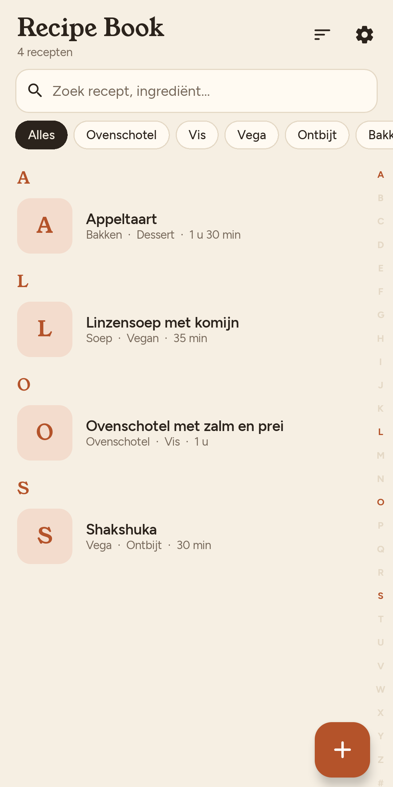
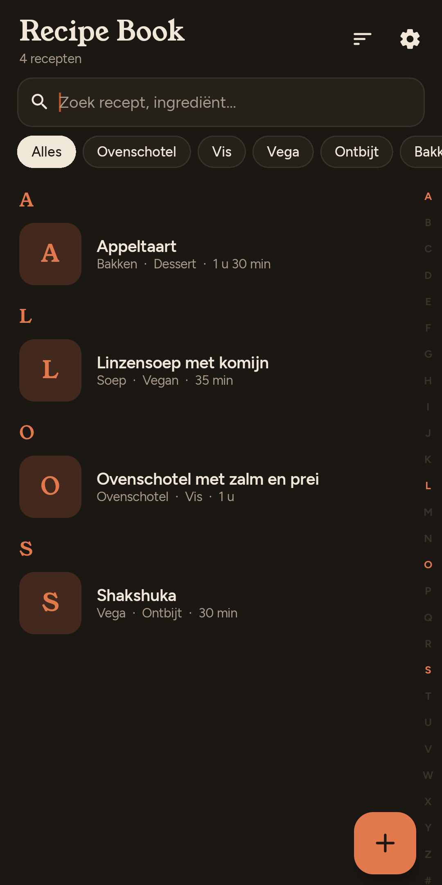

Android-app van ice-crystals
Al je recepten, in één heldere huisstijl.
Deel een link, maak een foto van een kookboek of typ het zelf in. Recipe Book herschrijft elk recept netjes, met de hoeveelheden gewoon in de stappen.
Nu in gesloten test. Binnenkort op Google Play.
- Geen account
- Geen advertenties
- Geen tracking
- Eenmalig € 0,99


Recept erin
Drie manieren om een recept toe te voegen
-
Deel een link
Vanuit je browser met Delen, of plak de link. Ook van pagina’s vol reclame en levensverhalen.
-
Maak een foto
Van een kookboekpagina, een tijdschrift of oma’s handgeschreven briefje.
-
Typ het zelf
Een eigen recept? De editor kent ingrediënten, groepen, tijden en stappen.
Huisstijl eruit
Van rommelig blogrecept naar een recept dat je kunt koken
Oké, deze ovenschotel maak ik al jaren voor de hele familie!! Je pakt zo’n 800 gram aardappels, schillen en koken tot ze zacht zijn (bij mij duurt dat een kwartiertje). Ondertussen de oven aan op 400 graden, en dan de prei…
- Verwarm de oven voor op 200 °C. Schil de aardappelen (800 g) en snijd ze in gelijke stukken.
- Kook de aardappelen in 15 minuten gaar in water met zout. Snijd ondertussen de prei (2) in dunne ringen.
Dezelfde toon, metrische eenheden en °C, en de hoeveelheden staan in de stappen.
Koken
Meer mensen aan tafel? Alles rekent mee.
Pas het aantal personen aan en elke hoeveelheid schuift mee, in de ingrediënten én in de stappen. Probeer het maar.
- 800 gkruimige aardappelen
- 100 mlmelk
- 500 gzalmfilet, in blokjes
- 2prei, in ringen
Kook de aardappelen (800 g) in 15 minuten gaar.

-
Tijdbalk
Voorbereiden 20 min · koken 15 min · oven 25 min
In één oogopslag hoe lang je bezig bent, en hoeveel daarvan wachten is.
-
Stappen afvinken
- Klaar:
Oven voorverwarmen - Aardappelen koken
Zie direct waar je was, ook als je even weg bent geweest.
- Klaar:
-
Eenheden en scherm
Celsius of Fahrenheit
Metrisch of Amerikaanse cups, net wat je wilt. En je scherm gaat niet op slot terwijl je kookt.
Huishouden
Eén receptenboek voor het hele huis
Koppel de telefoons thuis met een QR-code. Recepten, wijzigingen, beoordelingen en de prullenbak blijven gelijk, versleuteld via je eigen wifi. Geen cloud, geen account.
Geef een cijfer aan wat je kookte en noteer wat je de volgende keer anders doet. Iedereen ziet het gemiddelde.
Huishouden gekoppeld3 telefoons, gelijk via je eigen wifi
Geen foto?
Dan tekent Recipe Book er een
Een eenvoudige, platte illustratie in de kleuren van de app, zodat je overzicht er niet uitziet als een lijst met lege vakjes. Liever je eigen foto? Die kan altijd.
Linzensoep met komijnSoep · Vegan · 35 min · illustratie door Gemini
Licht, donker, vier talen
Kookt ’s avonds net zo prettig
Een warme donkere modus die je telefoon volgt. De app spreekt Nederlands, Engels, Frans en Duits, en een recept in een andere taal laat je met één tik vertalen.
- Nederlands
- English
- Français
- Deutsch

Van jou, op je telefoon
Lees de privacyverklaringGeen account
Installeren en koken. Geen e-mailadres, geen wachtwoord.
Geen tracking
Geen analytics, geen advertenties, geen server van de maker.
Geen abonnement
Eenmalig € 0,99, daarna is hij van jou.
Back-up als bestand
Bewaar je recepten waar jij wilt. De app stuurt ze nergens heen.
Heb ik een API-key nodig?
Alleen voor importeren, vertalen en illustraties. Je maakt in een minuut een gratis key bij Google AI Studio; de app laat zien hoe. Recepten zelf typen, koken en delen met je huishouden werkt zonder key.
Wat gaat er naar Google?
Alleen wat je importeert, vertaalt of laat tekenen: de link, de recepttekst of je foto. Al het andere blijft op je telefoon.
Kan mijn huisgenoot mijn key gebruiken?
Ja. Gekoppelde telefoons zonder eigen key kunnen die van jou gebruiken. Dat zet je uit bij Instellingen.
Is er een iPhone-versie?
Voorlopig niet. Recipe Book is er nu voor Android; een iPhone-versie sluiten we voor de toekomst niet uit.
Wat is er nieuw
Steeds een beetje beter
-
0.10.2 Koken met vinkjes
Vink stappen af terwijl je kookt. De app onthoudt waar je was.
-
0.9.4 Klaar voor Google Play
De app heet nu Recipe Book.
-
0.8.0 Een warm welkom
Een korte introductie bij de eerste start, met hulp bij je Gemini-key.
Gesloten test
Test mee voordat iedereen hem krijgt
Voordat Recipe Book in Google Play komt, testen we hem twee weken met een kleine groep. Je hebt een Android-telefoon en een Google-account nodig.
- Mail ons het Google-account (Gmail-adres) waarmee je Google Play gebruikt.
- Je krijgt een uitnodiging met een link naar de app in Google Play.
- Laat de app 14 dagen staan en gebruik hem af en toe. Feedback stuur je vanuit de app.
Je gegevens gebruiken we alleen om je uit te nodigen voor de test.